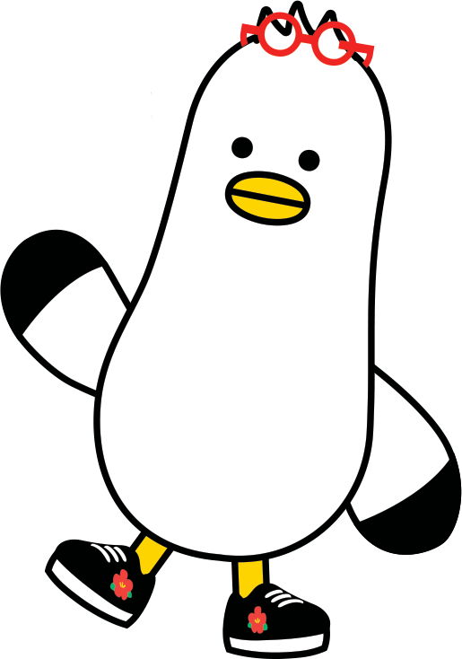

BTS
BTS is a curated series of training-free token & KV-cache pruning methods that ⚡ prune away redundancy while preserving performance across image, 3D, and text — on a mission to become the first pruning series with a method for every modality, from the PNU-CVSP lab.

Overview
The Busan Token-pruning Series is not confined to a single modality. It shares one goal — ⚡ prune redundant tokens without any training for efficient inference — while each work develops its own method for a different modality: image, 3D, and text. A common goal, modality-specific solutions.
⚡ Projects
AgilePruner
Efficient visual token pruning for 2D vision models — jointly analyzes token complexity, diversity, and attention to drop redundant tokens while keeping accuracy.